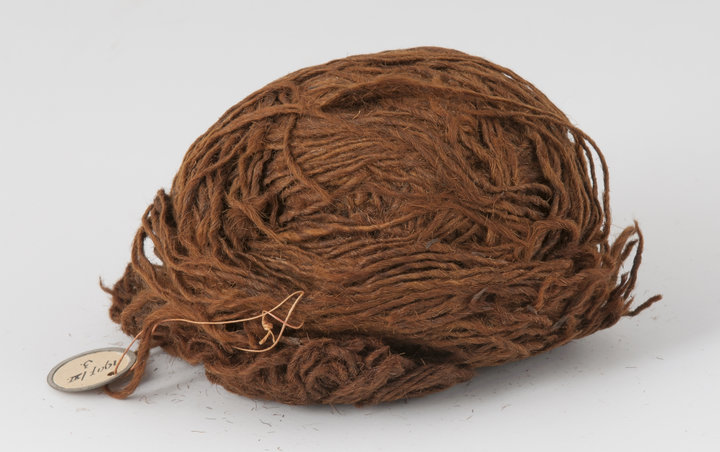

Dieses Wollknäuel stammt aus der Eisenzeit, um 600 v. Chr. Es wurde im Hochmoor bei Roswinkel im Südosten von Drenthe gefunden.
Die Wolle war gut erhalten, da sie in feuchtem, sauerstoffarmem Torf lag. Organisches Material zersetzt sich unter solchen Bedingungen kaum. In Drenthe wurden bereits mehrere Wollknäuel aus der späten Bronzezeit und der frühen Eisenzeit gefunden. Das Knäuel belegt, dass die Menschen damals schon Wolle für Textilien spannen. Hochmoore waren unbewohnt. Daher gehen Archäologen davon aus, dass es sich nicht um einen verlorenen Gegenstand, sondern um eine Opfergabe handelt. Möglicherweise war es ein rituelles Geschenk, beispielsweise für Fruchtbarkeit oder eine gesunde Herde.